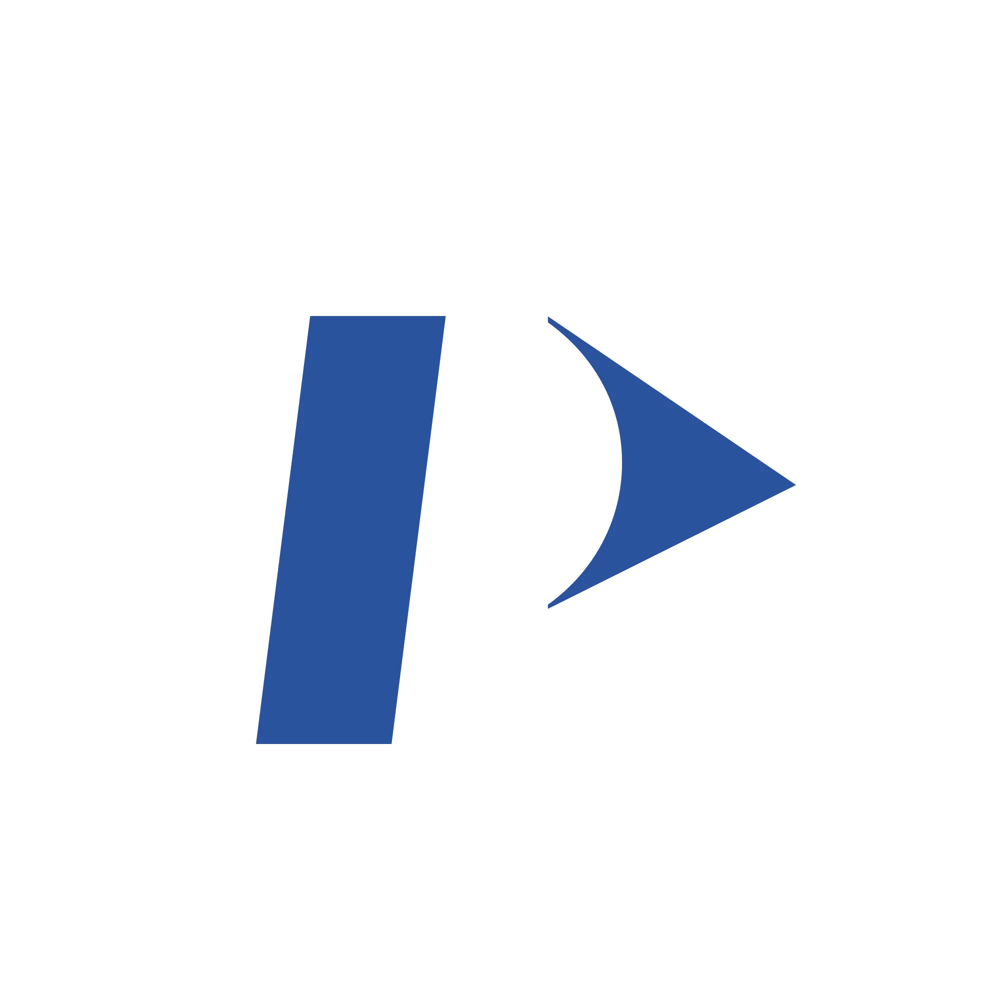

PerkinElmer
Mechanical Design Engineer
Sep 2025 - Aug 2026
- Achieved 0.001° angular resolution in a spectroscopy instrument's optical path by designing a coupled, synchronised precision motor assembly with a pre-loaded friction-drive reduction, then programming its control interface in Python over I2C and integrating it into the instrument alongside optical scientists and electrical engineers
- Cut production test time by over 4 hours (30%) per instrument by designing and manufacturing custom test jigs and assembly accessories
- Owned components from concept to delivery: rapid prototyping (3D printing, machined parts), procurement of standard, custom and motor parts, and applying GD&T, FMEA and poka-yoke